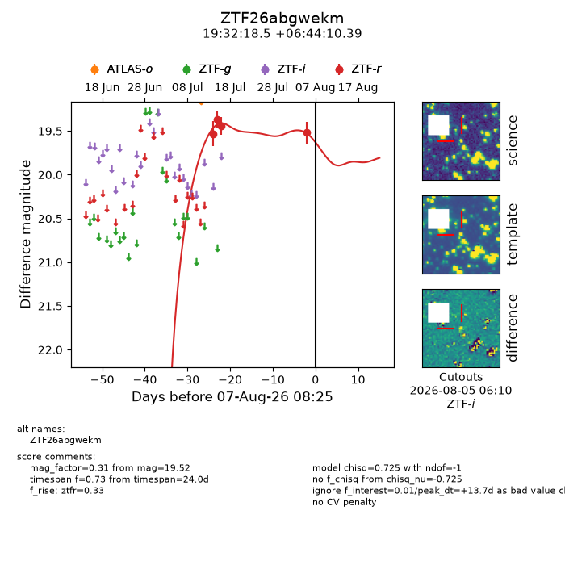
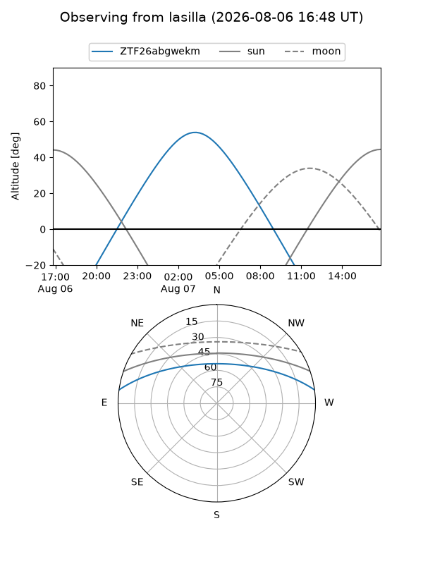
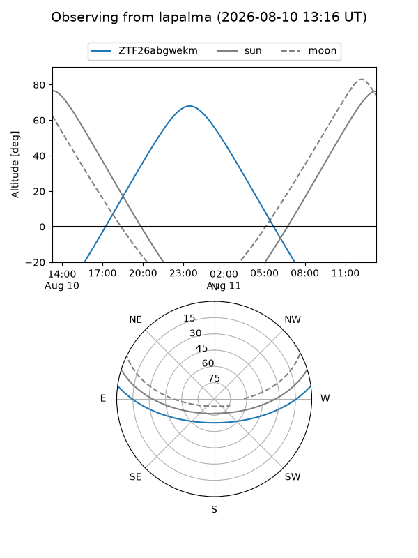
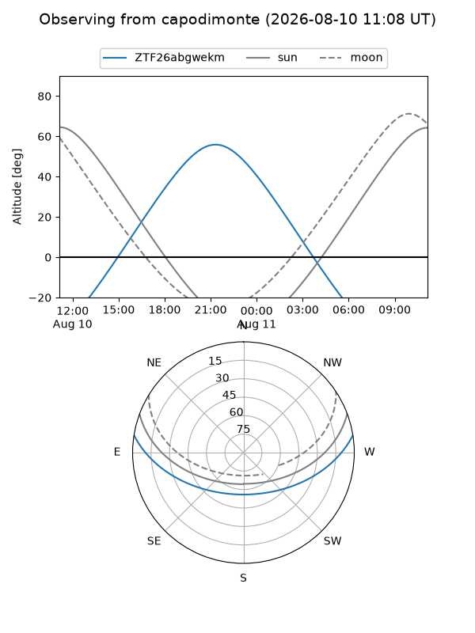
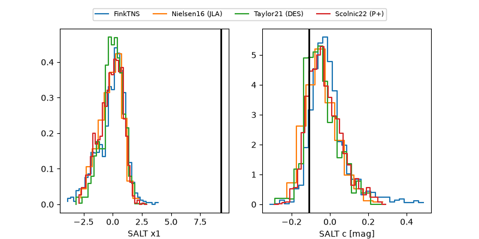

ZTF26abgwekm
Target ZTF26abgwekm at 2026-08-07 08:29
Aliases and brokers:
FINK-ZTF: ztf.fink-portal.org/ZTF26abgwekm
Lasair-ZTF: lasair-ztf.lsst.ac.uk/objects/ZTF26abgwekm
ALeRCE-ZTF: alerce.online/object/ZTF26abgwekm
Direct TNS query: direct search
alt names
ZTF26abgwekm (ztf,fink_ztf)
Coordinates:
equatorial (ra, dec) = 293.0769,+6.73622
equatorial (HMS+DMS) = 19:32:18.45,+06:44:10.39
galactic (l, b) = (43.6347,-5.92885)
Flags:
peak dt: +13.7
Photometry:
last ztfr=19.52
4 ztfr detections
Lightcurve

Visibility



Additional plots
